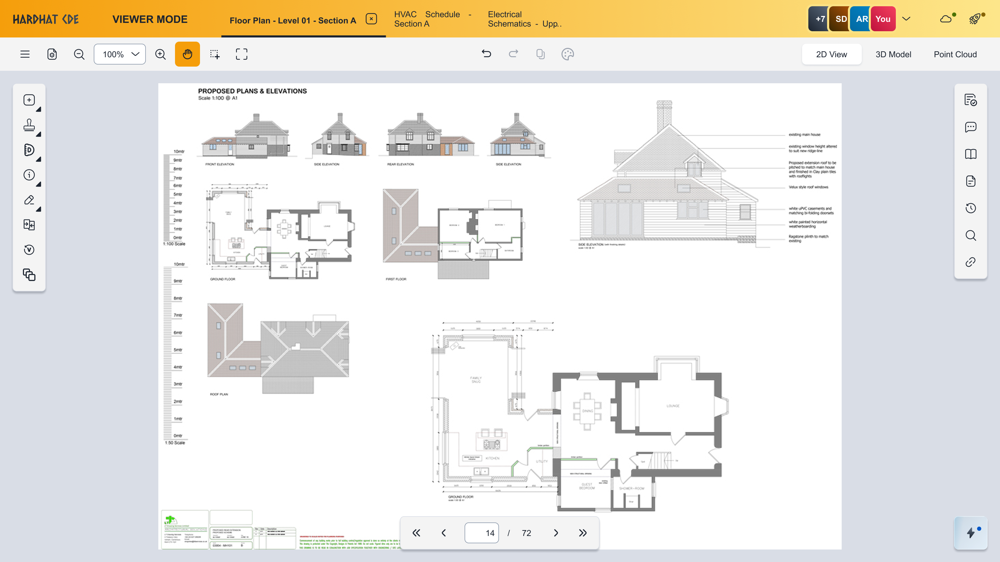
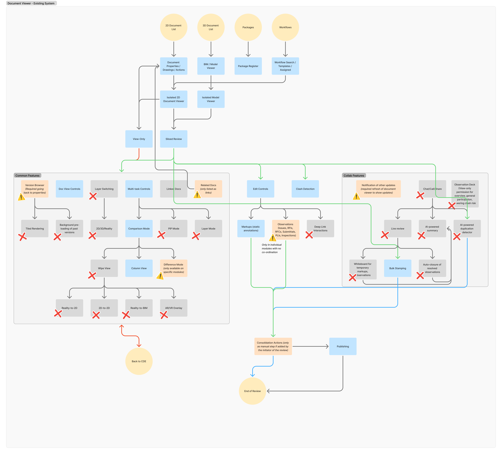
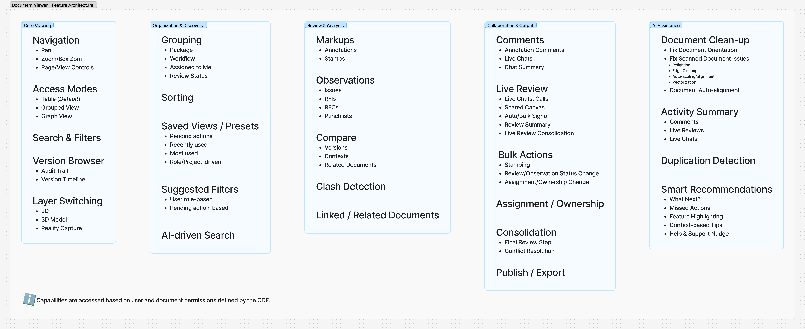
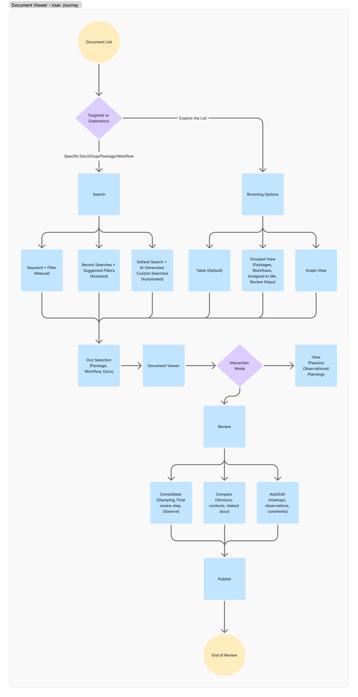
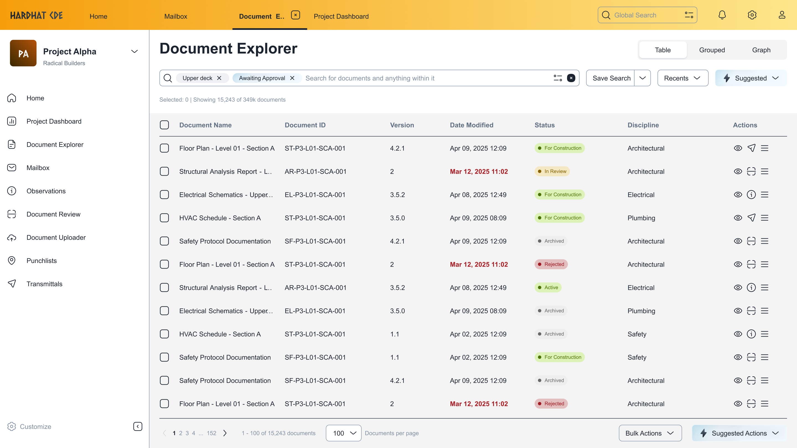

Document Viewer

The Vision
Architecting a unified Document Viewer to bridge the gap between 2D drawings, 3D models, and Reality Capture. This project transformed a fragmented ecosystem into a single, context-aware workspace—minimizing friction for large-scale construction workflows.

Problem - The Fregmentation Tax
Enterprise users were paying a 'cognitive tax' by juggling disconnected tools. Reviewing a single document meant navigating a maze of viewers, workflow modules, and external coordination layers.
A spiderweb of non-cohesive modules to switch, remember and coordinate between for a simple task - reviewing documents.
- Review workflows were split across viewer, issues, and workflow modules
- No clear distinction between viewing vs acting, increasing error rates
- Collaboration lacked context
- Comparing documents required manual navigation
The result was a high risk of error and a 'visibility vacuum' where collaboration lacked spatial context.

System Thinking - The Document-Centric Pivot
I moved the interaction surface from the 'Module' to the 'Document.' By anchoring workflows directly onto the drawing or model, the viewer became the operating system for the project, not just a window into a file.
- Documents act as the anchor for all actions
- Workflows and collaboration are embedded
- Users move across 2D, 3D, and reality seamlessly
- Designed for scale across large datasets and stakeholders

Strategic Trade-offs
Several structural and architectural decisions shaped the experience, balancing usability, scale, and system constraints.
Mode Logic: Separated 'Consumption' from 'Creation' to protect data integrity.
Contextual Persistence: Utilized side-drawers and overlays to ensure the document never left the user's field of vision.
Unified Viewer: Eliminated module switching that led to increased system complexity
In-context Collaboration: Allowed for improved visibility while requiring robust permissions
Solution
A multi-dimensional viewer combining navigation, review, and collaboration into a single workspace.
Users move between viewing, comparing, and acting without losing context.
- Layered viewing across document types
- Integrated comparison and navigation
- Context-aware tools
- Embedded workflows and communication


Impact - Quantified Results
Simplified complex workflows and improved clarity across large-scale document ecosystems.
- 40% Reduction in Task Latency: Streamlined the transition between 2D and 3D layers, eliminating redundant loading states.
- 65% Decrease in Navigation Overhead: Users successfully completed multi-document reviews without manual tool-switching.
- 25% Improvement in Review Accuracy: Formalizing the "Read-only vs. Review" modes significantly reduced accidental markups and data overrides in beta testing.
- System Scalability: Engineered to support 500MB+ model files and 10,000+ project markups without performance degradation.